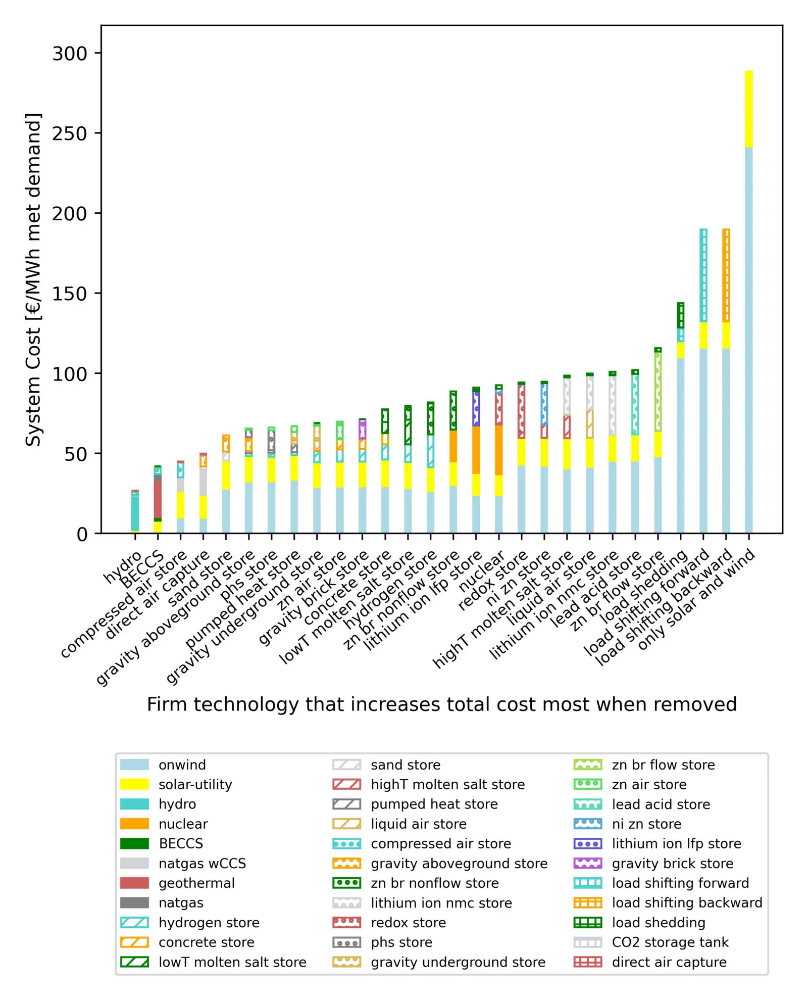

Broad range of technologies could firm up wind and solar generation in net zero carbon dioxide emission electricity systems
Key finding. Letting many firming technologies compete in a stylized net-zero electricity system and then sequentially removing the most valuable one at each step shows that reliable wind-and-solar systems do not depend on the feasibility of any particular firming technology.

What question did this research address?
Wind and solar need something to cover the hours they cannot. The candidates are numerous — dispatchable generators, storage of several kinds, atmospheric carbon dioxide removal, demand management — and because there are so many, studies usually assess one or a small handful at a time.
That leaves an unanswered question of a different shape: not which firming technology is best, but whether the whole approach depends on any single one of them being available.
What did we find?
Firming technologies are defined broadly as anything that makes electricity available when wind and solar generation falls short of demand — dispatchable generation, storage, carbon dioxide removal, and demand management all qualify.
Rather than compare candidates head to head, the method builds a least-cost system, removes whichever firming technology proved most valuable, re-optimizes, and repeats.
Systems remain reliable through that sequence. When the best option is taken away, the optimizer substitutes others, and the result is a system that still meets demand.
The conclusion is therefore about the class rather than the members: the availability of *some* firming capability matters, but the identity of the winner does not.
Why does it matter?
It shifts what a bet on wind and solar depends on. If reliability required one specific technology — long-duration storage, say, or direct air capture — then that technology failing would sink the whole approach. It does not.
That is a useful counterweight to the common argument that a wind-and-solar system is hostage to an unproven storage breakthrough. Many roads lead to a firm system, and the optimizer will take whichever is open.
It also reframes research strategy. Because no single firming technology is indispensable, spreading effort across several is more robust than concentrating it on the current favourite — the same portfolio logic that the cost-uncertainty work reaches from a different direction.
Citation
Alicia Wongel and Ken Caldeira (2023). Broad range of technologies could firm up wind and solar generation in net zero carbon dioxide emission electricity systems. Findings.
Related
- What does a reliable electricity system built on wind and solar actually need?
- Implications of uncertainty in technology cost projections for least-cost decarbonized electricity systems (Duan and Caldeira, 2024)
- Role of long-duration energy storage in variable renewable electricity systems (Dowling et al., 2020)
- The influence of regional geophysical resource variability on the value of single- and multistorage technology portfolios (Li et al., 2024)
- Geophysical constraints on the reliability of solar and wind power worldwide (Tong et al., 2021)